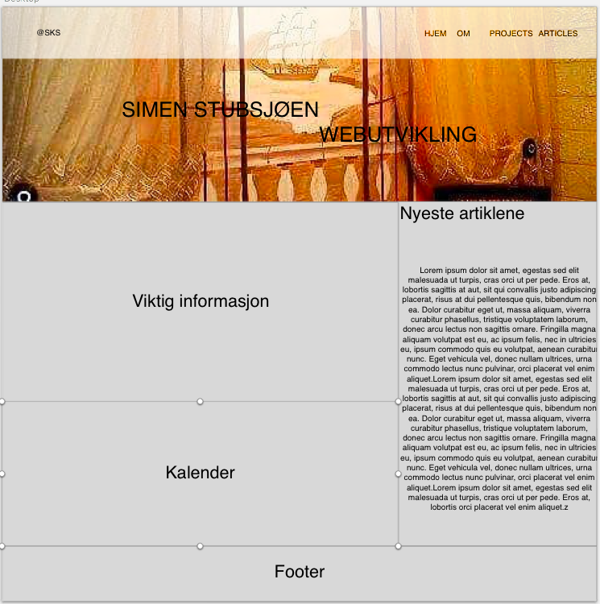
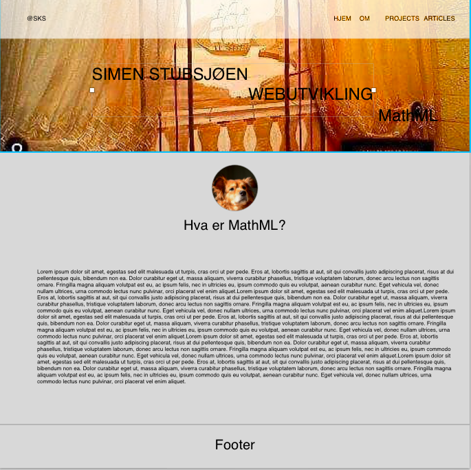

Hvordan denne siden ble til
Fra ide til produkt
Da jeg skulle begynne på denne oppgaven var jeg først inne på diverse youtube videoer for å se hvordan se om det var noen nyttige tips og triks man kunne lære seg. Jeg fant fort ut at det er ekstremt mange måter å gjøre det på, og det blir fort litt smak og behag, og hva som funker best for deg. Planen var å sette opp en side som skulle være enkel å navigere gjennom, stilfull samt enkel. Det skal være behagelig for leseren å besøke siden. Sideoppsettet er satt opp slik at menyen skal være lett tilgjengelig, og er plassert på en ganske "standard" plass. Sidebaren er satt til høyre og skal i tillegg ta minst mulig plass slik at det er mer rom for artikler og annen "viktig" informasjon.
 Som dere kanskje ser så ble ikke siden identisk til skissen, men jeg føler likevel at det var et godt utgangspunkt. Under ser dere tre sider jeg liker å bruke når det er noe jeg lurer på, eller når det er noe jeg prøver å lære meg.
Beskrivelse
Har sett mye på Wordpress for inspirasjon. Jeg liker det litt grått og stilrent, og fikk inspirasjon av farger fra denne siden
En annen side jeg har brukt for inspirasjon er denne. Mange flotte eksempler.